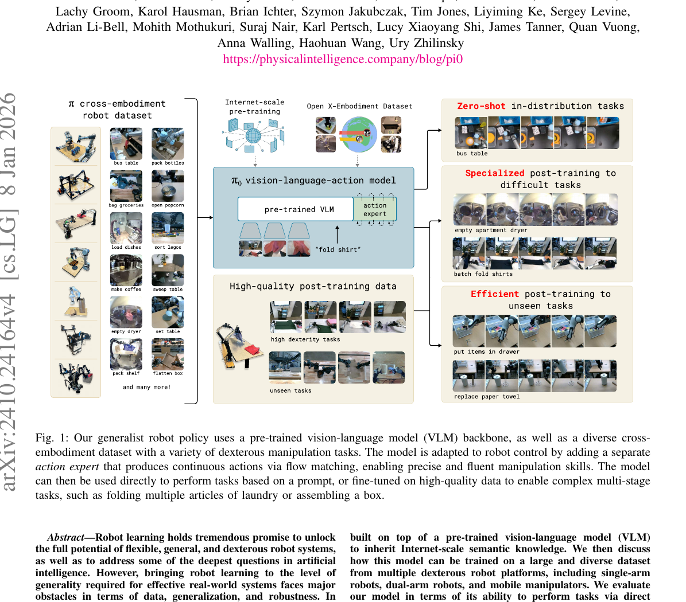
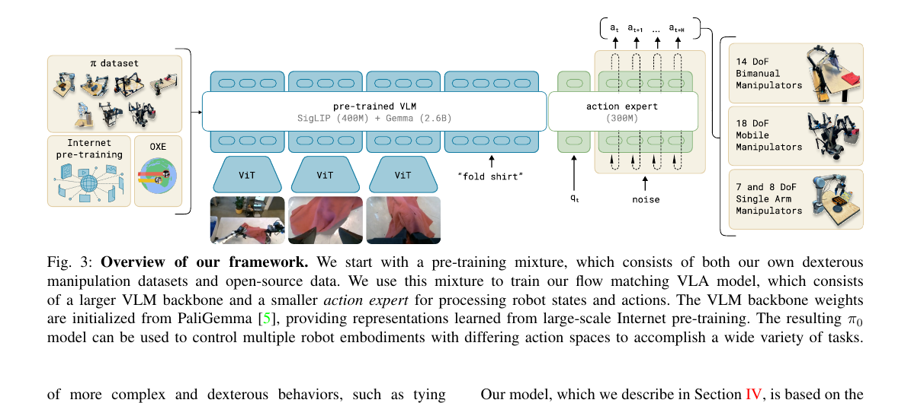
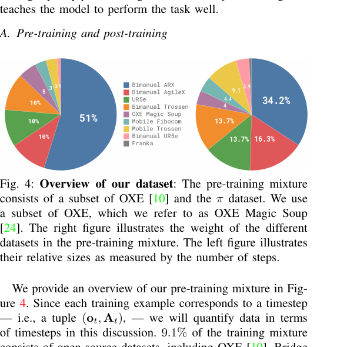
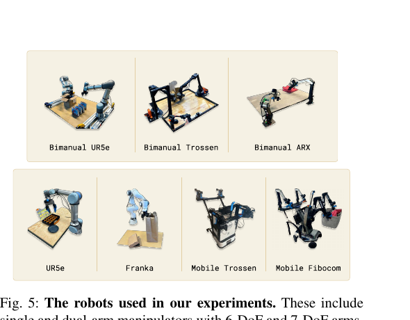

π₀: A Vision-Language-Action Flow Model for General Robot Control
Physical Intelligence · Black, Brown, Driess, Finn, Levine et al. · 2024-10 · v4 2026-01
π₀ 是第一个把 flow matching 用进机器人动作生成的 VLA 模型， 也是把"LLM 范式（大 pre-train + 小 post-train）"搬到真实机器人上的代表作。 按章节顺序读：先讲为什么要这么做（§1-§2），再讲 基础组件（§3），然后是完整架构（§4）， 接着用两节分别走完推理（§5）和训练（§6）流程， 最后是数据（§7）和实验（§8）。
§1 为什么要做 π₀
机器人学习的现状是：每个任务/机器人单独采一批数据、训一个小模型—— 能做的事窄、换个新场景就垮。π₀ 想要的是把 NLP/CV 已经跑通的 "大规模预训练 + 少量下游微调"范式移植到机器人上——做出 一个通用机器人基础模型（robot foundation model）， 靠语言指令就能驱动它做从叠衣服到打包盒子的多步复杂操作。
读完本节你会知道：π₀ 想解决的三个现实难题（数据、通用性、灵巧度）， 以及它的三条技术路线（VLM 初始化、flow matching、action expert） 各自在对应哪个问题。
展开原文 · 核心主张
"Robot learning holds tremendous promise to unlock the full potential of flexible, general, and dexterous robot systems... bringing robot learning to the level of generality required for effective real-world systems faces major obstacles in terms of data, generalization, and robustness."
1.1 三个现实难题
| 数据 | 机器人数据远比互联网文本/图像贵——没有"抓取数据的互联网"可用。必须从多种机器人、多种任务里拼出大语料库。 |
| 通用性 | 一个模型要能跨任务（叠衣服 / 收拾桌子 / 装盒子）、跨机器人本体（单臂 / 双臂 / 移动底盘）、跨场景（新物体、新环境）。 |
| 灵巧度 | 上面两条还要在复杂灵巧操作上成立——像叠 T 恤、整理零碎物品这种需要精确连续控制的任务，不能只做"推积木"。 |
1.2 对应的三条技术选择
π₀ 的名字里 V-L-A 三个字母各自对应一个模态处理： V = SigLIP 图像编码 · L = Gemma 文本编码 · A = Action Expert + flow matching 头。 前两者合起来就是 PaliGemma（SigLIP + Gemma）这个现成的 VLM。
1.3 Fig 1 全景：这个系统长什么样

π₀ 要做的是机器人版的基础模型：数据上靠多本体拼，架构上靠 VLM + action expert 分工，生成上靠 flow matching 保精度。下一节先把 "大 pre-train + 小 post-train"这套范式说清楚——它才是 π₀ 整体 pipeline 的骨架，§3 之后的各个模块都是在填这个骨架。
§2 两阶段范式 · 大 pre-train + 小 post-train
§1 说 π₀ 的目标是做通用机器人基础模型——但"通用"到底怎么实现？ 答案不是"训一个万能的模型一把梭"，而是照搬 LLM 的路数： 先在大而杂的数据（7 种机器人 · 68 任务 · 1 万小时）上预训练， 让模型学到"通用的低层技能先验"；再在小而精的高质量演示数据上 post-training，把这些先验调成"某个具体任务的解"。
本节把为什么要分两阶段讲清楚——这会直接决定 §4 架构里 "为什么要拆出 action expert"和 §8 实验里"为什么 scratch 打不过 pre-trained"。
展开原文 · 两阶段范式
"Our framework consists of a pre-training stage followed by a post-training stage... The purpose of the pre-training phase is to train a base model that exhibits broad capabilities and generalization, but is not necessarily specialized for high performance on any one task. This base model can follow language commands and perform a variety of tasks at rudimentary proficiency."
2.1 两阶段在干什么
| 数据规模 | OXE + DROID + Bridge v2 + π 自采 → ~10,000 小时，903M 时间步 |
| 机器人形态 | 7 种：UR5e / Bimanual UR5e / Franka / Bimanual Trossen / Bimanual ARX / Mobile Trossen / Mobile Fibocom |
| 任务数 | 68 个 π 自采任务 + OXE 里的子集 |
| 目标 | "广而浅"——能听懂指令、能大致做各种基础操作，但任何单个任务都不顶尖 |
| 对应 NLP | 类比 GPT 的 next-token 预训练：见过什么都懂一点，但没专精 |
| 数据规模 | 1–10 小时 演示足矣（部分任务 5 小时就能达 SOTA） |
| 数据质量 | 专人精采、无错误演示、单任务连续成功 |
| 目标 | "窄而深"——把某个具体任务（叠衣服 / 收桌子 / 装盒子）做到高成功率 + 强鲁棒 |
| 对应 NLP | 类比 SFT/RLHF：用小批高质量数据把基础模型调成"听指令"的有用模型 |
如果你只用小而精的数据从零训，模型会过拟合到具体任务， 换场景就垮——这就是传统 behavior cloning 的老问题。如果你只用大而杂的数据， 模型学到的是"平均质量的动作分布"——对任何具体任务都不够精细。 两阶段合起来：pre-train 给你"通用技能先验 + 对物体/语言的广义理解"， post-train 把这些先验聚焦到具体任务。§8 实验 A/D 专门验证了这点—— scratch 版本在困难任务上掉分明显。
2.2 一张图看两阶段怎么拼
flowchart LR
subgraph PRE["① Pre-training（大杂烩 · 10000h）"]
OXE[Open X-Embodiment
公开数据]
PI[π 自采数据
7 机器人 · 68 任务]
DROID[DROID / Bridge v2]
end
PRE --> BASE[π₀ Base Model
3.3B 参数
泛化 · 听指令 · 基础操作]
BASE --> POST1
BASE --> POST2
BASE --> POST3
subgraph POST["② Post-training（小而精 · 1-10h/任务）"]
POST1[叠衬衫 fine-tune]
POST2[清空烘干机 fine-tune]
POST3[收拾餐桌 fine-tune]
end
POST1 --> OUT1[叠衬衫 专家策略]
POST2 --> OUT2[清空烘干机 专家策略]
POST3 --> OUT3[收拾餐桌 专家策略]
π₀ Base ↔ GPT-base（预训练后啥都能扯但不听指令）
π₀ task-specific ↔ ChatGPT（SFT 后听话、专精）
这个对照不是我瞎编——论文里原话讲 "analogous to the recipe used for large language models"。
展开原文 · LLM 范式搬运
"We present a prototype model and learning framework, which we call π₀, that illustrates how each of these bottlenecks could be tackled. ... Our framework broadly resembles the training procedures employed for large language models, which typically consist of pre-training a base model on very large datasets ranged from the web, followed by a post-training recipe that uses higher-quality curated data to induce a desired behavior."
搞清楚"大 pre-train + 小 post-train"是外壳后，下一节 §3 打开内核—— 在具体每一步里，模型到底在生成什么？答案是"未来 50 步的动作块"，用 flow matching 生成。 这两个词各有一节讲：§3.1 action chunking，§3.2 flow matching。
§3 基础组件 · action chunking 与 flow matching
§2 把整体范式讲清楚了，但没说"一次前向在输出什么"。π₀ 每次推理输出的不是 1 个动作， 而是未来 H=50 步的动作块（action chunk），而且这 50 步是 用 flow matching 一次性生成（不是 autoregressive 逐步吐）。 这俩组合决定了后面 §4 架构的样子和 §5 推理的 10 步循环，不先搞清它俩别往下走。
3.1 Action Chunking · 为什么一次要生成 50 步
如果每次推理只输出下 1 个动作，两次推理之间的微小预测差异会让 机械臂产生肉眼可见的抖动（jitter）。一次生成 50 步（= 1 秒，执行频率 50 Hz）， 让这段时间内动作之间自然连贯，抖动消失。
H = 50 | 一次生成的动作个数（chunk size / action horizon） |
50 Hz | 执行频率——50 个动作刚好对应 1 秒 的机器人运动 |
action_dim | 每步动作维度（随机器人不同：单臂 ~7，双臂 ~14，移动底盘 ~18；统一 pad 到 18 维） |
| chunk 形状 | A = [a_t, a_{t+1}, ..., a_{t+49}]，shape [50, 18] |
像打字预测——你不是一个字母一个字母想，而是脑子里先浮出一整个短语再连贯打出来。 单动作预测 = 每个字母都重新决策 → 卡顿；chunk 预测 = 一整个短语出炉 → 流畅。
一次生成 50 步 → 延迟高（要跑完整个 flow matching 10 步去噪才拿到动作）。 工程上用 receding horizon control 缓解：执行前 N 步（比如前 10 步） 就回到观测阶段重新推理，不用等 50 步执行完——这个后面 §5.4 讲。
3.2 Flow Matching · 从噪声到干净动作的直线路径
Flow matching 是 2023 年 Lipman 等人提出的生成模型范式，直觉非常简单： 在"纯噪声"和"真实样本"之间画一条直线，让模型去学习这条线上每点的"速度向量"。 推理时就沿着预测的速度场一路走，直到走到干净样本。 对比扩散模型（diffusion）的"曲线路径 + 随机游走"，flow matching 的直线更省、更稳。
3.2.1 核心三公式
A_τ = τ · A + (1 − τ) · ε 其中 ε ~ N(0, I), τ ∈ [0, 1]τ=0 → 纯噪声；τ=1 → 干净动作；中间值 = 线性混合。 注意 π₀ 的约定和部分 flow matching 原论文方向相反（有些论文 τ=0 是干净）， 但只要内部一致就没问题。
u(A_τ | A) = ε − A
怎么推出来的？对 A_τ = τA + (1−τ)ε 求导得 dA_τ/dτ = A − ε。
论文把方向反过来写 u = ε − A（从"干净指向噪声"反向，作为"去噪方向"）——
这个方向在整条直线上是常数，这正是 flow matching 比 diffusion 漂亮的地方：
目标平稳，模型好学。
L(θ) = E[ ‖ v_θ(A_τ, o_t) − u(A_τ | A) ‖² ]
= E[ ‖ v_θ(A_τ, o_t) − (ε − A) ‖² ]
让模型输出的向量场 v_θ（网络输出）尽可能贴近目标 u=ε−A（已知答案）。
期望 E 来自三处随机：数据中采 (o_t, A)、随机采 τ、随机采 ε。
注意：π₀ 采样 τ 用的是偏小的 β 分布
（不是均匀分布），让模型多学"早期去噪"——早期噪声多，信号弱，更难学。
3.2.2 flow matching 是怎么跑的（训练 vs 推理）
flowchart TB
subgraph TRAIN["训练 · 一次前向"]
T1["采真实动作 A (ground truth)"] --> T2["采 τ~β, ε~N(0,I)"]
T2 --> T3["构造 A_τ = τA + (1-τ)ε"]
T3 --> T4["网络输出 v_θ(A_τ, o_t)"]
T4 --> T5["loss = ‖v_θ − (ε−A)‖²"]
end
subgraph INFER["推理 · 10 步 Euler 积分"]
I1["初始化 Â_0 ~ N(0,I), τ=0"] --> I2
I2["网络输出 v_θ(Â_k, τ_k)"] --> I3
I3["Â_{k+1} = Â_k + δ · v_θ （δ=0.1）"] --> I4
I4["τ_{k+1} = τ_k + 0.1"] --> I5{τ=1.0 ?}
I5 -->|否| I2
I5 -->|是| I6["输出 Â_10 = 干净动作 chunk"]
end
训练时一次前向就够（随机采一个 τ，算一次 loss 更新）。 推理时没有 ground truth，只能从纯噪声出发一步一步走 10 次—— 每次都是"用当前状态预测速度 → 欧拉积分前进一小步"，直到 τ=1.0。 这 10 次前向构成了 §5 里的外层循环；每次前向内部又有 18 层 transformer， 构成内层循环——后面细讲。
u(A_τ|A) 随 τ 变化吗？为什么这点很重要？
到这里你已经知道：一次要生成 [50, action_dim] 的动作块（§3.1），
生成方式是 flow matching 的 10 步 Euler 积分（§3.2）。
但 v_θ 到底长什么样？它是 PaliGemma 还是独立网络？
和图像、语言、机器人状态怎么融合？——这是 §4 架构要回答的。
§4 架构 · PaliGemma + Action Expert
§3 告诉你"输入 o_t + 噪声动作 A_τ，输出速度 v_θ"——
但中间那个 v_θ 的网络体到底长什么样？本节拆开来看。核心答案是
两套权重拼接的 transformer：PaliGemma（3B，处理图像+语言）+
Action Expert（300M，处理机器人状态和动作 token），两边通过块因果注意力交流。
搞懂这个结构，§5 推理流和 §6 训练流才有落点。
4.0 Fig 3 总览

展开原文 · 架构核心
"The π₀ model... consists primarily of a language model transformer backbone. Following the standard late fusion VLM recipe, image and text inputs are encoded... We further augment this backbone with robotics-specific inputs and outputs — namely, proprioceptive state and robot actions. π₀ uses conditional flow matching to model the continuous distribution of actions."
4.1 Block-wise Causal Attention · 块因果注意力
整个 token 序列拆成三个块：① 图像+文本（PaliGemma 的 prefix）→ ② 机器人状态 q_t（action expert 的 1 个 token）→ ③ 噪声动作 A_τ（50 个 token）。 注意力规则：块内双向 + 块间只能向前看。这让 pre-trained VLM 部分 不被后来的机器人 token 污染，推理时可以把 ①②的 KV 算一次缓存起来重复用（10 步去噪只有 ③ 变）。
flowchart LR
B1["① 图像+文本 tokens
(PaliGemma 权重)
块内双向"]
B2["② 状态 q_t · 1 token
(action expert 权重)
能看 ①"]
B3["③ 噪声动作 A_τ · 50 tokens
(action expert 权重)
能看 ①②，块内双向"]
B1 --> B2
B2 --> B3
B1 --> B3
① 作为 prefix：观测一步变，前两个块计算一次就够了——10 步去噪可以复用 KV cache，只重新算 50 个 action token，节省 ~90% FLOPs。
② 隔出状态块：状态每步看一次即可，不需要被 50 个 action token 重复 attend，和 ③ 分开建模更干净。
③ 块内双向：action chunk 内的 50 步是"一体成形"，互相都要 attend，不像 LLM 那样严格 autoregressive。
展开原文 · attention mask
"We adopt a blockwise causal attention mask with three blocks: image and language prefix (block 1), robot state (block 2), and noisy action chunk (block 3). Tokens in a given block can attend to tokens in the same block and all preceding blocks."
4.2 为什么要独立的 Action Expert
既然已经有了 3B 的 PaliGemma，为什么不直接让它处理机器人 token？非要额外塞一个 300M 的 action expert？——答案是模态冲突 + 推理速度。
| 模态冲突 | VLM 权重是"图像-文本离散 token 分布"的最优解；机器人状态/动作是连续信号，分布规律和语义 token 完全不同。共享一套权重会互相拖累。 |
| 推理速度 | 推理时要跑 10 次前向（flow matching 10 步）。前两个块（图像+语言+状态）KV cache 一次即可复用；但 action token 每步都要重算——让这部分走 300M 小网络而不是 3B 大网络，10 步总 FLOPs 几乎不增。 |
| 保护预训练 | 机器人数据量远小于 VLM 预训练数据，让机器人梯度全灌进 3B VLM 会导致灾难性遗忘语义知识。Expert 独立，机器人梯度只改 300M。 |
可以理解为"模态 MoE"：token 根据类型（文本图像 vs 状态动作）被路由到不同专家的权重。 只是这里路由规则是静态的——token 是什么类型从一开始就定了，不是学出来的 gate。
到这你会画 π₀ 的数据流图了：图像+语言进 PaliGemma、状态+动作进 Action Expert、 块因果 mask 把它们串起来、最后 Action Expert 最后一层输出 50 个速度向量。 下一节 §5 把这套架构在推理时的完整 10 步循环跑一遍——把 "我给个指令 → 机械臂动起来" 里每个 tensor 的 shape 都讲清。
§5 推理 · 一次完整的 10 步去噪
§4 给了架构静态图，本节动起来：从"看到一帧图 + 听到指令"到 "输出 50 个动作执行"，中间每个 tensor 怎么流。重点是搞清 什么算 1 次、什么算 10 次、什么可以 KV-cache—— 这是理解 π₀ 为什么能跑到实时频率的关键。
5.0 输入与输出
| 输入 · 观测 o_t |
① 图像 {I¹_t, I²_t, I³_t}（最多 3 路多视角） ·
② 语言指令 ℓ（例如 "fold the shirt"） ·
③ 机器人本体状态 q_t（关节角等连续向量）
|
| 输出 · 动作 chunk |
A_t = [a_t, a_{t+1}, ..., a_{t+H-1}]，H = 50
|
flowchart TB
O[["Stage 1 · 观测编码（只 1 次，KV-cache）
图像 → SigLIP → image tokens
指令 → Gemma → language tokens
→ PaliGemma 跑完所有层 → 保存 KV"]]
S[["Stage 2 · State token（只 1 次）
q_t → state_proj(Linear) → 1 个 state token
（走 action expert 权重）"]]
INIT["Stage 3 初始化
A^τ_0 ~ N(0, I), shape [50, action_dim]
τ_0 = 0"]
LOOP["Stage 3 去噪循环 · for k = 0..9
(a) 构造 action tokens
(b) action expert forward
(c) Euler 积分 A^τ_{k+1} = A^τ_k + 0.1 · v_θ
(d) τ_{k+1} = τ_k + 0.1"]
DONE{"τ = 1.0 ?"}
EXEC[["Stage 4 · 执行
全部 50 步 or receding horizon"]]
O --> S --> INIT --> LOOP --> DONE
DONE -->|否| LOOP
DONE -->|是| EXEC
5.1 Stage 1 · 观测编码（只做 1 次，可缓存）
- 图像编码：每张图过 SigLIP ViT → 一组 image tokens（每 token 768 维），3 路拼接成
[N_img, d]。 - 语言编码：
ℓ经 Gemma tokenizer → text embedding →[N_text, d]。 - VLM 前向：把
[image tokens | language tokens]送进 PaliGemma backbone（2.6B），跑完所有层，保存每一层的 K、V 缓存。
这部分是整个推理里最贵的一步——完整走一遍 3B 的 VLM——但只跑 1 次。 之后的 10 步去噪循环里，观测不变，图像/语言部分的 K、V 直接复用，不再重算。 这是 §4.1 块因果 mask 设计的直接收益，也是 π₀ 能做到推理实时的最关键优化。
5.2 Stage 2 · Robot State token 准备（只做 1 次）
q_t ∈ R^{action_dim} # pad 过的关节角
state_token = state_proj(q_t) # Linear, shape [1, d_model]
注意：state token 走的是 action expert 的权重（和后面的 action token 共享）， 不走 VLM。它的 KV 也会被缓存，之后 10 步循环只读不写。
5.3 Stage 3 · Flow Matching 去噪循环（10 次迭代）
① 初始化
$A^{\tau_0}$ 相当于 flow matching 里的 $x_0$（纯噪声端）； 真实干净动作 $A_\text{clean}$（训练时的 ground truth）对应 $x_1$。 下面循环要做的事就是 "从 $A^{\tau_0}$ 逐渐走向 $A_\text{clean}$"，沿着 flow matching 的那条直线路径，每步走 $\delta = 0.1$。
② for k = 0, 1, ..., 9
A^τ_k（noisy action）过action_in_proj（Linear）→ 50 个初步 tokenτ_k（标量 0.0 / 0.1 / ... / 0.9，flow timestep）经正弦位置编码 → 1 个 time embedding- 每个 action token 与 time embedding concat → 过
action_time_mlp（Linear → Swish → Linear）→ 50 个最终 action tokens
输入序列：[Image/Lang tokens (KV cache) | state token | 50 个 action tokens]
每一层应用块因果 attention mask：
| 块 ↓ 看 → | Image/Lang | State | Action |
|---|---|---|---|
| Image/Lang | ✅ 双向 | ❌ | ❌ |
| State | ✅ | ✅ | ❌ |
| Action | ✅ | ✅ | ✅ 双向 |
- Image/Lang 部分不重算，直接用 Stage 1 的 KV cache
- State + action tokens 走 action expert（300M）每一层
取最后一层的 50 个 action token 输出 → 过 action_out_proj → 得到向量场：
v_θ(A^τ_k, τ_k, o_t) # shape [50, action_dim]
- $A^{\tau_k}$
- 当前去噪状态——一段 $[50,\text{action\_dim}]$ 的"半干净"动作
- $v_\theta(A^{\tau_k}, \tau_k, o_t)$
- π₀ 网络预测的向量场（速度场），告诉你当前位置该往哪走
- $\delta = 0.1$
- 步长（10 步走完 0→1，所以 $\delta=1/10$）
- $A^{\tau_{k+1}}$
- 下一步的 action token，更接近干净动作
新值 = 旧值 + 步长 × 当前位置的"速度"。这就是用 flow matching 预测的向量场沿直线走一小步——经典 Euler 法。
有些图里标注是 t → t−1——这是从扩散模型借来的写法，
t = T 纯噪声、t = 0 干净样本，每次去噪一步 t 减 1。
在 π₀ 约定下 τ 是相反方向（0 噪声 / 1 干净），但含义一致：每轮都更像真实 action clean。
5.4 Stage 4 · 输出动作
循环结束后 A^τ_{10} = A^1.0 即为干净动作 chunk A_clean。
- 全部执行：把 50 步动作发给机器人控制器（50 Hz → 1 秒）
- 部分执行 + 重规划：执行前 k 步（如前 10 步）后，回到 Stage 1 用新观测重新推理——即 滚动时域控制。让策略对突发扰动（物体滑落、机械臂偏移）反应更快，同时保留 chunk 预测的平滑性。
外层：去噪 10 步（for k）。内层：每步 Action Expert 18 层 transformer。 总计算量 ≈ 10 × 18 = 180 层 forward 量级，但其中图像+语言部分只在 Stage 1 算了 1 次—— 比"全网络每步都重算"便宜 10 倍。
推理路径讲完了。训练时没有 10 步循环——训练是"一次前向一次反传"。
下一节把训练的完整四步写清，重点在 loss 的物理含义和为什么
u = ε − A 是对的监督目标。
§6 训练 · Flow Matching Loss 的完整四步
§5 的推理有 10 步循环。训练正好相反：一条真实动作 chunk + 一次前向 + 一次反传就够了。
但"一次前向"里有不少细节决定成败——怎么采 τ 和 ε、怎么构造 noisy action、
监督目标到底是什么（ε − A 这个方向从哪来）。
本节按 4 步走完。
6.1 Step 1 · 取真实动作 chunk
从机器人 demonstration 数据集 $\mathcal{D}$ 里采一段真实动作序列：
这就是 flow matching 里的 $x_1$（目标分布的样本）。同一个样本还包含 $o_t$（当时的观测：图像 + 语言 + 状态）。
6.2 Step 2 · 采样 τ、ε，构造 noisy action
随机采两个东西：
- 噪声 $\varepsilon \sim \mathcal{N}(0, I)$，shape 和 $A$ 一样 $[50, \text{action\_dim}]$
- 时间 $\tau \in [0, 1]$（论文里用偏小的 shifted β 分布，让模型多学早期去噪）
然后线性插值得到 noisy action：
- $A$
- 真实干净动作（$x_1$ 端）
- $\varepsilon$
- 纯高斯噪声（$x_0$ 端）
- $\tau \in [0,1]$
- 清洁度——$\tau=1$ 全干净，$\tau=0$ 全噪声
- $A^\tau$
- "被部分加噪"的动作，沿直线 $\varepsilon \to A$ 在 $\tau$ 比例处的点
$A^\tau$ 不是"第 τ 个时间步的动作"（不是 action sequence 里的某一步）， 而是整段 50 步动作的"第 τ 个清洁度版本"—— 可以理解为 $A$ 被部分加噪后的样子。
直观理解这条插值：
| $\tau = 0$ | $A^\tau = \varepsilon$ → 纯噪声（起点） |
| $\tau = 0.5$ | 一半噪声一半真实动作 |
| $\tau = 1$ | $A^\tau = A$ → 干净动作（终点） |
这里 τ 约定是 τ=1 干净、τ=0 噪声，和推理时方向一致—— 训练和推理 convention 对齐，模型学到的向量场直接拿来用。
6.3 Step 3 · 把 A^τ 当成 action tokens 输入 transformer
整个前向流程和推理时完全一样：
A^τ过action_in_proj→ 拼上 τ 的 sinusoidal embedding → 过action_time_mlp→ 50 个 action tokens- 拼成完整序列
[image | lang | state | action]，过整个网络（VLM + action expert） - 取最后一层 50 个 action token 输出 → 过
action_out_proj→ 得到向量场预测：v_θ(A^τ, o_t) # shape [50, action_dim]
训练时不需要 KV cache——每个 batch 样本的观测都是新的， 不存在"反复算同一个 o_t" 的场景，cache 没用武之地。 推理时才靠 KV cache 让 10 次循环里观测只算 1 次。
6.4 Step 4 · Loss · 强制 v_θ 去预测目标向量场
① 目标向量场
这是 flow matching 的核心定义。怎么推出来的：
- 已知 $A^\tau = \tau \cdot A + (1-\tau) \cdot \varepsilon$
- 对 $\tau$ 求导：$\dfrac{\mathrm{d}A^\tau}{\mathrm{d}\tau} = A - \varepsilon$
- 论文把方向反过来写，定义 $u = \varepsilon - A$（去噪方向：从噪声"指向"干净动作的反方向，或等价地"从干净指向噪声"当作梯度方向）
$u = \varepsilon - A$ 是从噪声端 $\varepsilon$ 走到干净端 $A$ 这条直线路径上的速度—— 而这条速度对所有 $\tau$ 都是常数（直线路径嘛）。 对比扩散模型的曲线 + 随时间变化的目标，flow matching 目标平稳、模型好学—— 这正是它比 diffusion 漂亮的地方。
② Loss
- $v_\theta(A^\tau, o_t)$
- 模型输出——给定 noisy action 和观察，预测出来的向量场
- $u(A^\tau \mid A) = \varepsilon - A$
- 已知答案——从噪声端走到干净端这条直线的常数速度
- $\|\cdot\|^2$
- MSE：让预测向量场尽量接近目标向量场，对每一维独立平方求和
- $\mathbb{E}_{p(A\mid o)}$
- 对数据集 $\mathcal{D}$ 取期望——随机采一条 $(\text{观测},\ \text{动作})$ pair
- $\mathbb{E}_{q(A^\tau\mid A)}$
- 对插值采样取期望——随机采 $\tau$ 和 $\varepsilon$，构造 $A^\tau$
翻译成人话：
让模型预测的向量场 $v_\theta$（模型输出）尽可能接近 目标向量场 $u = \varepsilon - A$（已知答案），用 MSE 衡量差距。
期望 $\mathbb{E}$ 来自三个随机性上取平均：
- $p(A_t \mid o_t)$：从数据集里随机采一条 $(\text{观测},\ \text{动作})$ pair
- $q(A^\tau_t \mid A_t)$：随机采 $\tau$ 和 $\varepsilon$，构造 $A^\tau$
- （隐含）batch 内多个样本一起算，反传后更新 $\theta$
6.5 为什么 τ 用偏小的 β 分布
均匀采 τ 的问题：τ 接近 1 时（样本快接近干净动作）任务简单—— 大部分网络容量被"浪费"在容易的样本上。π₀ 用偏小的 β 分布让 τ 更多落在 [0, 0.5]， 强迫模型多练"从很噪声的起点往回推"的困难情形——这直接对应推理时前几步（τ=0.0, 0.1, 0.2 ...） 最不稳定的阶段。
展开原文 · τ 采样
"We sample the flow matching timestep τ from a shifted beta distribution that emphasizes lower timesteps (noisier). See Appendix B for more details."
6.6 训练伪代码（一次 batch update）
# 从数据集抽一个样本
(o_t, q_t, A) ← sample from D # A = 真实 50 步动作 chunk
# 采 τ（偏小 β 分布）
τ ← Beta(1.5, 1.0).sample().clip(0, 1 − 0.001)
# 采 ε（各维独立标准高斯）
ε ← N(0, I) # shape [50, action_dim]
# 构造 noisy action
A^τ ← τ · A + (1 − τ) · ε # shape [50, action_dim]
# 前向（和推理完全一样的网络路径，但没有 KV cache）
v_θ ← π₀(o_t, q_t, A^τ, τ) # shape [50, action_dim]
# Loss 和反传
L ← ‖v_θ − (ε − A)‖²
L.backward(); opt.step()
训练的数学部分到此为止——4 步讲清了 loss 的来源和物理含义。 但论文真正的"秘密"在数据上—— 1 万小时怎么拼出来的、7 种机器人怎么共享一套动作空间？§7 讲数据和本体。
§7 数据与机器人
π₀ 的泛化能力来自数据多样性。本节两图：Fig 4 看数据由谁组成， Fig 5 看 7 种机器人本体长什么样、动作空间有多大。
7.1 Fig 4 · 数据组成

7.2 Fig 5 · 7 种机器人本体

不同机器人动作空间维度不同，但 action expert 只有一个输出头——解法是 统一 pad 到 18 维（最大者）。训练时根据机器人类型加 mask， 忽略不存在的维度。这比"每机器人一个头"简单得多，也是 π₀ 能共享一套权重的关键前提。
§8 实验 · 四套评估
§1–§7 告诉你 π₀ "应该能做什么"。本节用实验验证。作者设计了四套互补评估： A 对比 baseline，B 语言遵循能力，C 新任务微调效率， D 5-20 分钟级的复杂多阶段任务。每套都挑出了 π₀ 相对前辈的一个独特优势。
A · 开箱即用对比（Fig 7）
| 任务 | 5 个：shirt folding / bussing easy / bussing hard / grocery bagging / toast out of toaster |
| 对手 | OpenVLA（7B VLA，基于 RT-2 系）、Octo（小型 diffusion policy）、π₀-small（π₀ 的无 VLM 版 470M baseline）、π₀-parity（训练步数对齐版） |
| 结论 | π₀ 全面领先——在 bussing hard / grocery bagging 这类难任务上 baseline 接近全 0，π₀ 保持高成功率。验证 flow matching + VLM 初始化的叠加效果。 |
B · 语言指令遵循（Fig 8）
| 评估 | 3 种任务（table setting / grocery bagging / bussing hard）× 3 种指令粒度（flat / human-intermediate / HL-VLM-intermediate） |
| 对照 | π₀ vs π₀-small |
| 结论 | π₀ 显著优于 π₀-small，差距主要来自中等粒度指令（"pick up the spoon"）——VLM pre-training 提供的语义 grounding 正好在这里生效。换成高层指令（"set the table"）两者都需要外部 HL-VLM 分解。 |
C · 新任务微调效率
| 任务 | pre-training 未见过的 dexterous task（e.g. 放东西进抽屉、换纸巾、stack bowls） |
| 数据量 | 1–5 小时演示 |
| 结论 | π₀ 在 1h 级数据就能上手；scratch / no-pretrain 版本要 5h+ 才接近。pre-training 给的是"通用操作先验"而非"具体任务记忆"——这正是基础模型范式成立的必要条件。 |
D · 复杂多阶段任务
| 任务 | 清空洗烘一体机、叠多件衣服、收拾餐桌到洗碗机——单次演示 5–20 分钟级 |
| 配合 | 高层 VLM 规划（SayCan 风格）+ π₀ 做底层技能执行 |
| 结论 | π₀ 能在这些时长下保持成功率，是同类 VLA 第一次做到。之前的 RT-2/OpenVLA 停在几秒到分钟级任务。 |
① 评估主要在 π 自己的机器人上做——跨实验室 zero-shot 迁移没 report； ② 硬件闭源——复现困难（没开源 checkpoint 到 1M+ 步规模）； ③ 安全/失败模式没系统性分析（和传统控制论意义上的"可验证"差距还很大）。
§9 与 LeCun / VLA 的联系
把 π₀ 放进 embodied AI 的地图里——它和 LeCun 的自主智能架构、 和 RT-2 / OpenVLA / Helix 这些兄弟模型到底什么关系？
9.1 对应 LeCun 六模块
| Perception | ↔ PaliGemma · SigLIP 视觉编码 + Gemma 指令理解 |
| World Model | 缺失——π₀ 是 policy-only，没有预测下一帧观测的模块 |
| Cost | 隐式在数据里——专家演示的行为分布就是"好"的定义，没有显式 cost |
| Short-term Memory | 缺失——每次决策只看当前 1 帧，无历史 |
| Actor | ↔ Action Expert · 直接输出 50 步动作 |
| Configurator | 部分存在——语言指令充当任务配置 |
π₀ 是 model-free VLA——不建模世界。这让它数据效率差 （要 1 万小时）、规划能力弱（多步任务靠外部 HL-VLM 分解）。 LeCun 路线（JEPA + MPC）想要的是能在脑内想象未来的模型—— π₀ 没有这块，但胜在工程现在就能跑出来。
9.2 和其他 VLA 的比较
| RT-2 (2023) | VLM + 离散 action token（tokenize 到文本词表）。π₀ 换成 flow matching 的连续 action，精度和平滑度都大提升。 |
| OpenVLA (2024) | 7B 开源 VLA，依然用离散 action token。π₀ 比它小（3.3B）反而更强——主要得益于 flow matching 和 action expert。 |
| Diffusion Policy (2023) | 用 diffusion 做动作生成，但没有 VLM 初始化——小模型精细但不泛化。π₀ = Diffusion Policy 思想 + VLM backbone。 |
| Helix / Figure AI | 类似路线（双塔 VLM + 快慢分层），工程细节不开放，π₀ 是开放的代表作。 |
9.3 给自己找实习时的 takeaway
① 技术栈：会 PaliGemma / Flow Matching / Block-wise attention 是 VLA 岗位基本面。 ② 工程技巧：multi-embodiment pad、KV cache 跨步复用、receding horizon—— 这些都是面试可以聊的点。 ③ 研究空白：π₀ 缺世界模型/短期记忆/显式 cost——这些恰是下一代模型的 greenfield。 如果你要在硕士阶段做点有辨识度的东西，在这三块做减法实验比盲目 scale 更有价值。
π₀ 不是最"干净"的架构（比起 JEPA 的理论自洽），也不是最大（比起 OpenVLA 7B）， 但它是当前最 useable 的 VLA 基础模型——把 LLM 的 pre-train/post-train 范式、VLM 的语义先验、flow matching 的连续动作生成三块拼在一起，跑出了真能叠衣服的机器人。 工程味道浓于理论味道，但这正是 embodied AI 这个阶段最需要的东西。